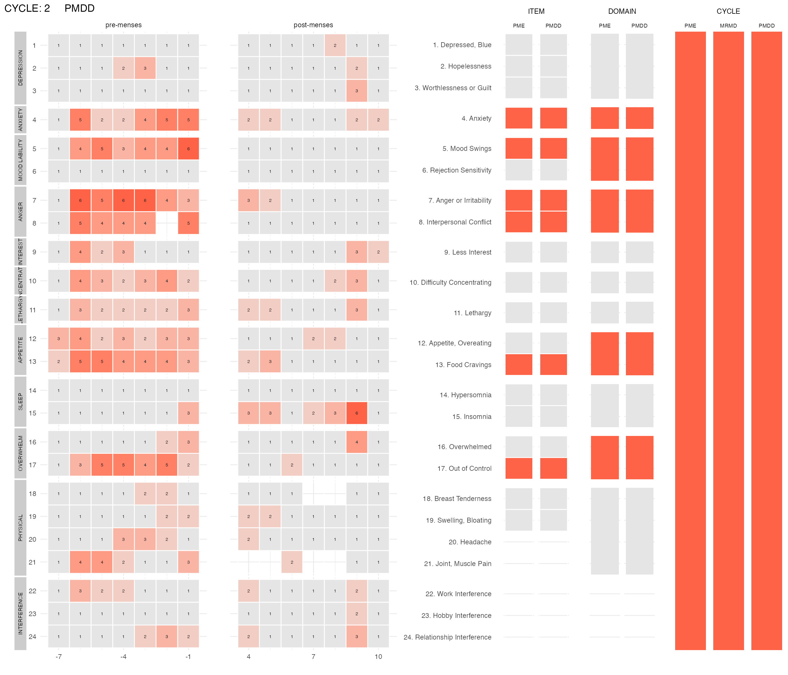

Introduction to the `cpass` package
cpass_vignette.RmdInstallation of the cpass package
Currently, the cpass package is hosted on the package
author’s github repository.
To install it from github, install and load the package
devtool by running:
install.packages("devtools")then install and load the cpass package by running:
devtools::install_github("lasy/cpass", dependencies = TRUE)Note that the cpass package depends on several other
packages (mostly packages from the tidyverse suite).
This vignette also uses tidyverse functions so it is
recommended to install and load the tidyverse suite by
running:
install.packages("tidyverse")Alternatively, individual packages can be loaded independently:
library(dplyr)
#>
#> Attaching package: 'dplyr'
#> The following objects are masked from 'package:stats':
#>
#> filter, lag
#> The following objects are masked from 'package:base':
#>
#> intersect, setdiff, setequal, union
library(ggplot2)
library(purrr)
library(tibble)
library(tidyr)
library(stringr)
library(magrittr)
#>
#> Attaching package: 'magrittr'
#> The following object is masked from 'package:tidyr':
#>
#> extract
#> The following object is masked from 'package:purrr':
#>
#> set_namesDemo dataset
To explore the cpass package, we will use a demo dataset
with the data (daily ratings) from 20 subjects. This demo dataset is
attached to the cpass package and documented in
?PMDD_data.
To load this data into the environment, run:
Overview of the package functions
The cpass package contains 3 types of functions:
a data formatting function
as_cpass_data()which first checks the format of the data you would like to analyse with thecpasspackage, then formats it for diagnosis and/or visualizationsa PMDD/MRMD/PME diagnosis function
cpass()visualization functions:
plot_subject_obs(),plot_subject_cycle_obs(),plot_subject_dx()andplot_subject_data_and_dx()
A typical cpass workflow consists of
loading (and formatting) raw data from a
.csvor.xlsfilepreparing them for diagnosis with the
as_cpass_data()running the
cpass()function on these data and extract some general statistics about the diagnosesvisually explore the data of specific subjects with the visualization functions.
Package demo
Formating raw data into cpass_data
The function as_cpass_data() transforms raw data into
cpass_data. The data provided as argument to
as_cpass_data() must be in long format, i.e. one
row per subject, cycle, day and DRSP (daily record of severity of
problems) item (i.e., the symptom diary used to collect the
data for a C-PASS diagnosis).
input <- as_cpass_data(d, sep_event = "menses")
#> Number of subjects: 20
#> Total number of cycles: 37
#> Percentage of missing scores: 3.23 %
#> Warning in as_cpass_data(d, sep_event = "menses"): The 'phase' column will be over-written
#> Percentage of missing scores
#> (in pre- & post-menstrual phases): 3.23 %For the full documentation, type ?as_cpass_data in the
R console.
Running the CPASS procedure for PMDD/MRMD/PME diagnosis
Now that the data is formatted, it can be passed to the
CPASS() function. This function will run the CPASS
procedure for PMDD/MRMD (and optionally PME) diagnoses:
diagnosis <- cpass(input)
#> PME diagnosis is still experimental and has not been validated clinically. Please, use with caution.For the full documentation, type ?CPASS in the
R console.
The CPASS function returns a list of 6 tables:
names(diagnosis)
#> [1] "subject_level_diagnosis" "cycle_level_diagnosis"
#> [3] "DSM5_domains_level_diagnosis" "item_level_diagnosis"
#> [5] "daily_summary_per_item" "summary_item"Let’s have a look at the first table:
diagnosis$subject_level_diagnosis
#> # A tibble: 20 × 15
#> subject Ncycles_tot Ncycles N_PMDD N_MRMD N_PME pmddcycprop mrmdcycprop
#> <dbl> <int> <int> <int> <int> <int> <dbl> <dbl>
#> 1 2 2 2 2 2 2 1 1
#> 2 15 1 1 NA NA NA NA NA
#> 3 17 2 2 0 1 0 0 0.5
#> 4 21 2 2 0 0 0 0 0
#> 5 25 2 2 0 2 1 0 1
#> 6 27 2 2 0 1 1 0 0.5
#> 7 33 1 1 NA NA NA NA NA
#> 8 36 2 2 1 1 1 0.5 0.5
#> 9 44 2 2 1 1 1 0.5 0.5
#> 10 47 3 3 1 1 1 0.333 0.333
#> 11 48 1 1 NA NA NA NA NA
#> 12 49 2 2 0 1 0 0 0.5
#> 13 60 1 1 NA NA NA NA NA
#> 14 95 1 1 NA NA NA NA NA
#> 15 117 2 2 1 1 2 0.5 0.5
#> 16 122 3 3 0 2 1 0 0.667
#> 17 147 2 2 1 1 1 0.5 0.5
#> 18 158 2 2 1 2 2 0.5 1
#> 19 162 2 2 2 2 2 1 1
#> 20 178 2 2 2 2 2 1 1
#> # ℹ 7 more variables: pmecycprop <dbl>, PMDD <lgl>, MRMD <lgl>, PME <lgl>,
#> # dxcat <dbl>, dx <fct>, avgdsm5crit <dbl>This table has the diagnoses of the 20 subjects.
table(diagnosis$subject_level_diagnosis$dx)
#>
#> no diagnosis MRMD PMDD PME
#> 8 3 3 13 subjects (~15%) have a PMDD diagnosis, 3 others have a MRMD diagnosis and 9 subjects (~45%) have no diagnosis based on their reported symptoms.
The remaining 5 subjects did not have sufficient data to make a diagnosis:
diagnosis$subject_level_diagnosis %>%
filter(is.na(dx))
#> # A tibble: 5 × 15
#> subject Ncycles_tot Ncycles N_PMDD N_MRMD N_PME pmddcycprop mrmdcycprop
#> <dbl> <int> <int> <int> <int> <int> <dbl> <dbl>
#> 1 15 1 1 NA NA NA NA NA
#> 2 33 1 1 NA NA NA NA NA
#> 3 48 1 1 NA NA NA NA NA
#> 4 60 1 1 NA NA NA NA NA
#> 5 95 1 1 NA NA NA NA NA
#> # ℹ 7 more variables: pmecycprop <dbl>, PMDD <lgl>, MRMD <lgl>, PME <lgl>,
#> # dxcat <dbl>, dx <fct>, avgdsm5crit <dbl>We see that each of these 5 subjects only reported DRSP for one cycle (instead of the two required).
Now, we can dive deeper into the data of particular subjects. For
example, we can check the cycle-level diagnosis of subject
#47 who reported DRSP scores for 3 cycles.
diagnosis$cycle_level_diagnosis %>% filter(subject == 47)
#> # A tibble: 3 × 9
#> subject cycle included n_DSM5_domains_meeting_P…¹ n_DSM5_domains_meeti…² PME
#> <dbl> <dbl> <lgl> <int> <int> <lgl>
#> 1 47 1 TRUE 3 0 FALSE
#> 2 47 2 TRUE 5 5 TRUE
#> 3 47 3 TRUE 0 0 FALSE
#> # ℹ abbreviated names: ¹n_DSM5_domains_meeting_PME_criteria,
#> # ²n_DSM5_domains_meeting_PMDD_criteria
#> # ℹ 3 more variables: DSM5_A <lgl>, DSM5_B <lgl>, diagnosis <chr>The second cycle of this subject fulfilled the criteria for a cycle-level PMDD diagnosis. The symptoms reported in the other cycles did not meet the criteria for PMDD nor for MRMD.
We can dive even deeper and look at the DRSP items during this cycle #2:
diagnosis$item_level_diagnosis %>% filter(subject == 47, cycle == 2)
#> # A tibble: 24 × 16
#> subject cycle item at_least_n_obs max_sev_pre n_days_high_score mean_pre
#> <dbl> <dbl> <dbl> <lgl> <int> <int> <dbl>
#> 1 47 2 1 TRUE 1 0 1
#> 2 47 2 2 TRUE 3 0 1.43
#> 3 47 2 3 TRUE 1 0 1
#> 4 47 2 4 TRUE 5 4 3.43
#> 5 47 2 5 TRUE 6 5 3.86
#> 6 47 2 6 TRUE 1 0 1
#> 7 47 2 7 TRUE 6 5 4.43
#> 8 47 2 8 TRUE 5 5 3.83
#> 9 47 2 9 TRUE 4 1 1.86
#> 10 47 2 10 TRUE 4 2 2.71
#> # ℹ 14 more rows
#> # ℹ 9 more variables: mean_post <dbl>, raw_cyclical_change <dbl>, range <dbl>,
#> # percent_change <dbl>, max_sev_post <int>, item_meets_PMDD_criteria <lgl>,
#> # item_meets_PME_criteria <lgl>, DSM5_SYMPTOM_DOMAIN <chr>,
#> # SYMPTOM_CATEGORY <chr>As this is a large table which provides the criteria details for each item, we may only consider the following columns for now:
diagnosis$item_level_diagnosis %>%
filter(subject == 47, cycle == 2) %>%
select(subject, cycle, item, item_meets_PMDD_criteria, DSM5_SYMPTOM_DOMAIN) %>%
as.data.frame()
#> subject cycle item item_meets_PMDD_criteria DSM5_SYMPTOM_DOMAIN
#> 1 47 2 1 FALSE DEPRESSION
#> 2 47 2 2 FALSE DEPRESSION
#> 3 47 2 3 FALSE DEPRESSION
#> 4 47 2 4 TRUE ANXIETY
#> 5 47 2 5 TRUE MOOD LABILITY
#> 6 47 2 6 FALSE MOOD LABILITY
#> 7 47 2 7 TRUE ANGER
#> 8 47 2 8 TRUE ANGER
#> 9 47 2 9 FALSE INTEREST
#> 10 47 2 10 FALSE CONCENTRATION
#> 11 47 2 11 FALSE LETHARGY
#> 12 47 2 12 FALSE APPETITE
#> 13 47 2 13 TRUE APPETITE
#> 14 47 2 14 FALSE SLEEP
#> 15 47 2 15 FALSE SLEEP
#> 16 47 2 16 FALSE OVERWHELM
#> 17 47 2 17 TRUE OVERWHELM
#> 18 47 2 18 FALSE PHYSICAL
#> 19 47 2 19 FALSE PHYSICAL
#> 20 47 2 20 FALSE PHYSICAL
#> 21 47 2 21 NA PHYSICAL
#> 22 47 2 22 FALSE INTERFERENCE
#> 23 47 2 23 FALSE INTERFERENCE
#> 24 47 2 24 FALSE INTERFERENCEAnd we observe that this subject mostly experienced severe anxiety, inability to control their mood, anger and feeling of overwhelm in the premenstrual phase of cycle 2.
Visualizing subjects data
While the subject data and diagnoses can be explored by inspecting
these tables, the cpass package comes with visualization
functions which may help in the investigation of a specific subject’s
data.
Visualizing subject’s diagnoses
For example, one can have an overview of a subject diagnosis with the
plot_subject_dx() function.
For the same subject #47, we run:
plot_subject_dx(input %>% dplyr::filter(subject == 47))
The top panel provides the subject ID, their diagnosis, the number of cycles for which some scores were provided and the number of cycles that had enough data to be included in the diagnosis procedure. It also provides the number of cycles with a PMDD or a MRMD diagnosis.
Visualizing subject’s reported scores
From the cycle_level_dx table from this subject, we know
that cycle #2 fulfilled the PMDD criteria while other cycles did
not.
To explore the scores reported during the 2nd cycle, the function
plot_subject_cycle_obs() can be used. This function
visualizes the reported score for a given cycle:
plot_subject_cycle_obs(data = input %>% filter(subject == 47, cycle == 2))
#> PME diagnosis is still experimental and has not be validated clinically. Please, use with caution.
The two left panels visualize the reported scores with the x-axis being the cycle-days (time) and each line of the y-axis representing one DRSP item. The score of each item for each day is written on the corresponding (x,y) rectangle. The color of the rectangle is proportional to the score. Low scores (1) are gray, high scores (6) are red. Missing scores are represented by transparent rectangles. The panels on the right visualize the items or domains or cycle that fulfill the PMDD criteria. If they do not meet the criteria, their corresponding rectangle is light-gray. If they meet the criteria, they are red. Items that are excluded from the diagnosis procedure are in dark-gray.
For this subject, we can compare their second cycle (above) with their third cycle:
plot_subject_cycle_obs(data = input %>% filter(subject == 47, cycle == 3))
#> PME diagnosis is still experimental and has not be validated clinically. Please, use with caution.
Note that the reported scores can be visualized without the diagnosis
with the option add_diagnosis = FALSE
plot_subject_cycle_obs(data = input %>% filter(subject == 47, cycle == 2), add_diagnosis = FALSE)
And that the color of the high score can be changed with the option
color_max_score = "desired_color":
plot_subject_cycle_obs(data = input %>% filter(subject == 47, cycle == 2), color_max_score = "turquoise")
#> PME diagnosis is still experimental and has not be validated clinically. Please, use with caution.It is also possible to visualize all cycles of a user at once with
the function plot_subject_obs()
plot_subject_obs(data = input %>% filter(subject == 47))
#> PME diagnosis is still experimental and has not be validated clinically. Please, use with caution.Visualizing subject’s reported scores and diagnosis
And finally, the function plot_subject_data_and_dx() is
useful to visualize at once all reported scores and the diagnoses
summaries of a given subject.
Because this function may return large visualizations, by default, it prints the visualization to a pdf that has an appropriate size (i.e., a height proportional to the number of cycles reported by the subject).
By default, the pdf is saved in the current directory and the
filename specifies the subject ID but both the path and the pdf name can
be specified via the options pdf_path and
pdf_name.
The pdf option can also be turned off with the option
save_as_pdf = FALSE. In this case, calling the function
prints the visualization in R.
If the function is called with the option
save_as_pdf = TRUE (default), the visualization is returned
silently but could be caught by a variable
(e.g. viz <- plot_subject_data_and_dx(data); viz).
plot_subject_data_and_dx(data = input %>% filter(subject == 47), save_as_pdf = FALSE)
#> PME diagnosis is still experimental and has not be validated clinically. Please, use with caution.